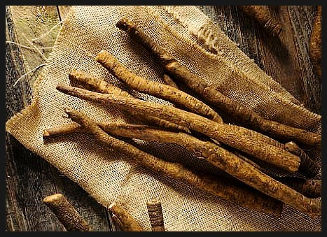

1월 제철음식

식이섬유가 풍부해 포만감을 오래 느끼게 해주는 효과가 있고 식욕억제에 도움을 주며,
배변활동을 촉진시켜서 다이어트에도 좋고 독소배출 감영예방 효과 신장기능 향상음식: 우엉조림,우엉차,우엉볶음
명태는 모든 부위가 요리에 사용되는 생선입니다. 생태찌개, 생태 매운탕, 황태구이, 황태찜, 북엇국, 북어무침, 술안주로 좋은 노가리 등으로 다양하게 조리되고 있는데요. 단백질이 풍부하며, 알과 창자는 각각 명란젓, 창난젓으로 만들어 섭취합니다.
음식: